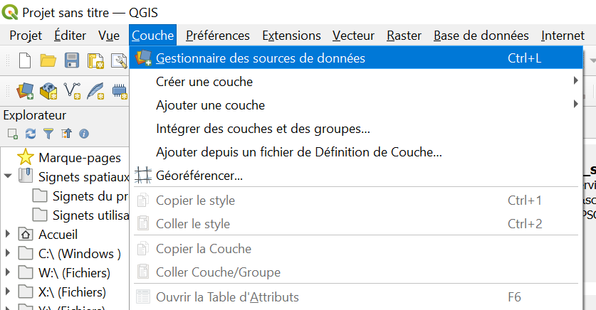
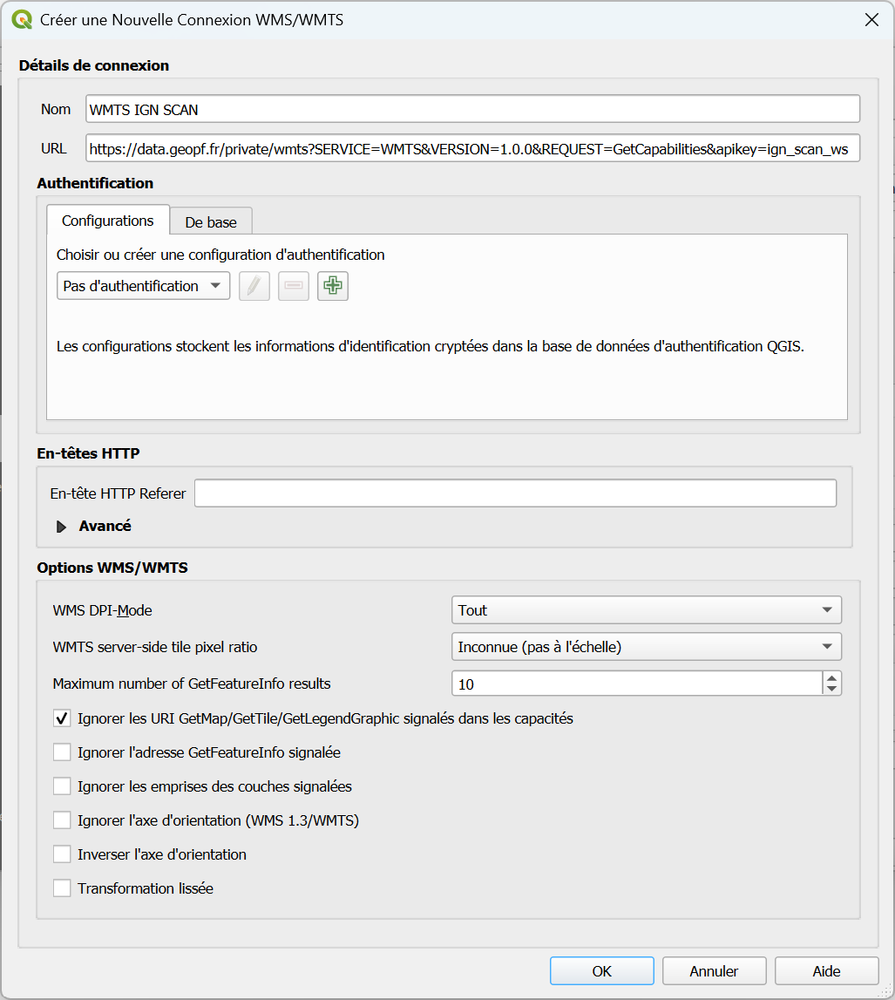
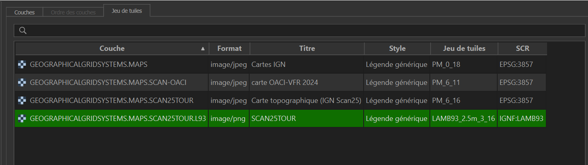
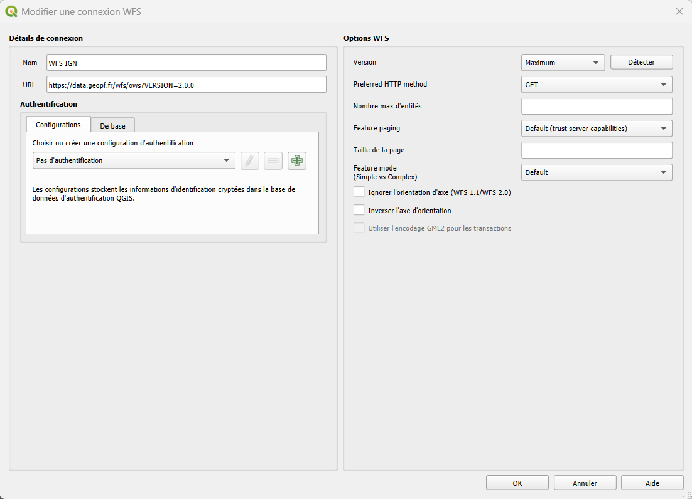
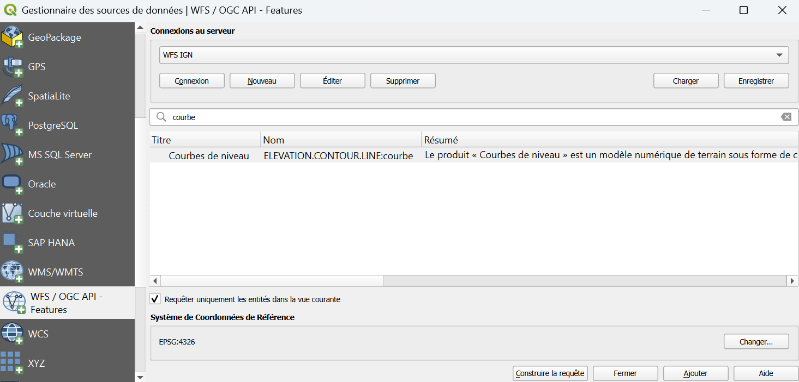
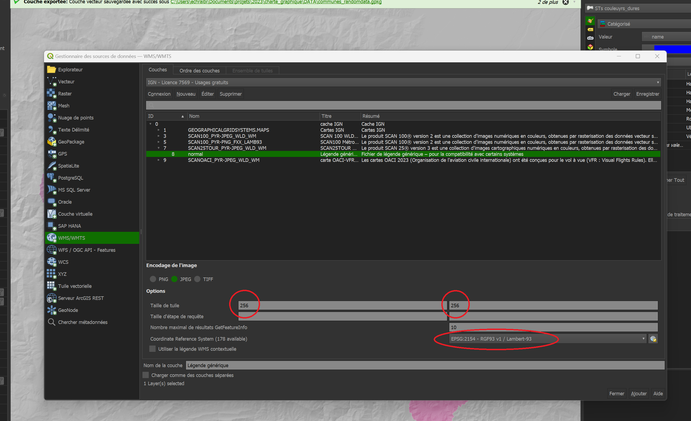

Fonds de cartes
Pourquoi utiliser des fonds de carte ?
Un projet QGIS sert avant tout à croiser et analyser vos propres données. Mais ces données n'ont de sens que replacées dans leur contexte géographique.
C'est le rôle des fonds de carte : ils donnent un repère visuel ou thématique à vos propres données (cadastre, suivis naturalistes...), sans que vous ayez à recréer ou maintenir vous-même ces données déjà produites et mises à jour par d'autres organismes (IGN, DGFiP, Sandre, ...).
Plutôt que de télécharger et stocker ces données — souvent volumineuses — sur chaque poste, on y accède à la demande via un flux réseau (WMS, WMTS ou WFS) au moyen d'un URL.
Le fond de carte reste toujours à jour, et votre machine ne charge que la portion du territoire affichée à l'écran. Ainsi, à chaque déplacement sur la carte, QGIS interroge automatiquement le serveur distant pour récupérer les données correspondant à la zone affichée à l'écran.
Quel flux choisir ?
Vous trouverez ci-dessous les configurations à réaliser pour accéder à ces ressources, puis les ajouter à vos projets.
Ajouter des fonds de carte
De manière générale, toutes les sources de données se trouvent dans le Gestionnaire des sources de données, accessible depuis :
Onglet du haut Couche > Gestionnaire de source de données ou tout simplement Ctrl+L

WMS/WMTS
Le format le plus courant pour nos fonds de carte (SCAN 25, orthophotos...) est le WMS.
Ce format, en plus de ne pas être stocké directement sur nos machines, présente l'avantage de générer des images à la demande. Ce qui rend l'affichage plus rapide et plus léger !
Point définition
WMS : le serveur génère une image de la carte à la demande.
WMTS : le serveur diffuse des images précalculées découpées en petits carrés, appelés "tuiles", organisées par niveau de zoom.
SCAN 25 - IGN
- Ouvrir le gestionnaire de sources de données : Ctrl+L
- Aller sur WMS/WMTS dans le gestionnaire et cliquer sur Nouveau
- Dans la boîte de dialogue qui vient de s'ouvrir, renseignez les champs :
- Nom : c'est le nom qui vous permettra de retrouver la connexion, donnez lui un nom explicite, par exemple "WMTS IGN SCAN"
- URL :
https://data.geopf.fr/private/wmts?SERVICE=WMTS&VERSION=1.0.0&REQUEST=GetCapabilities&apikey=ign_scan_ws - Authentification : pas besoin de configurer une authentification.
- Cocher la case Ignorer les URI GetMap/GetTile/GetLegendGraphic signalés dans les capacités.

- Valider en cliquant sur OK.
Une fois sorti de la boîte de dialogue :
-
Dans le menu déroulant sélectionner la connexion que vous venez de créer (WMTS IGN SCAN) puis cliquer sur Connexion.
-
Un nouvel onglet s'ouvre automatiquement vous permettant de choisir entre plusieurs versions du SCAN 25, choisir celui projeté en Lambert-93 (EPSG:2154)

- Cliquer sur Ajouter en bas à droite pour ajouter cette couche WMTS au projet actuel.
On peut aussi ajouter tous les fonds IGN libres (Orthophotos, SCAN 1000, SCAN Régions,...)
Réitérer cette procédure avec le lien suivant dans URL :
https://data.geopf.fr/wmts?SERVICE=WMTS&VERSION=1.0.0&REQUEST=GetCapabilities
WMS depuis un XML
-
Télécharger le catalogue en faisant clic droit > Enregistrer la cible du lien sous sur le lien suivant : service WMS.xml
-
Déplacer ce fichier dans un dossier où il sera facile à retrouver.
Exemple : C:\Users\"VotreNom"\Documents\QgisXML
Remplacer "VotreNom" par le nom d'utilisateur sur votre machine. -
Lancer QGIS
-
Ouvrir le gestionnaire de sources de données : Ctrl+L
-
Cliquer sur WMS/WMTS dans l'explorateur, sélectionner Charger des connexions
-
Sélectionner le fichier
service WMS.xmlprécédemment enregistré. -
Une fenêtre s'ouvre, cliquez sur Tout Sélectionner puis Importer
Cette opération a enrichi l'annuaire des couches WMS avec les catalogues IGN les plus souvent utilisés.
Vous pouvez maintenant ajouter des fonds de carte à votre projet au format WMS.
WFS
Les flux WFS sont moins utilisés au parc, même s'ils sont parfois très utiles !
Ce flux WFS permet d'accéder aux données géographiques vectorielles brutes avec leurs attributs, en plus de leur représentation.
Données vectorielles IGN
-
Ouvrir le gestionnaire de sources de données : Ctrl+L
-
Aller dans l'onglet WFS dans le ruban de gauche.
-
Cliquer sur Nouveau
-
Entrer un nom clair permettant d'identifier la ressource (ex : WFS IGN)
-
Coller le lien de la ressource dans le champs URL :
https://data.geopf.fr/wfs/ows?VERSION=2.0.0
-
Cliquer sur OK
WMS ou WFS depuis un autre lien
Vous avez trouvé le lien vers une ressource WMS ou WFS qui n'est pas dans le catalogue mentionné plus haut.
Une liste de ressources supplémentaires est disponible plus bas également.
-
Ouvrir le gestionnaire de sources de données : Ctrl+L
-
Aller dans l'onglet WMS/WMTS ou WFS dans le ruban de gauche.
-
Cliquer sur Nouveau
-
Entrer un nom clair permettant d'identifier la ressource ( i.e."IGN - base de données Hydro" )
-
Coller le lien de la ressource dans le champs URL
-
Authentification : pas besoin de configurer une authentification.
-
Pour un flux WMS :
- Cocher la case Ignorer les URI GetMap/GetTile/GetLegendGraphic signalés dans les capacités.
-
Cliquer sur OK
Charger un fond de carte dans un projet QGIS
-
Lancer QGIS
-
Ouvrir le gestionnaire de sources de données : Ctrl+L
-
Cliquer sur l'onglet à gauche WMS/WMTS ou WFS selon le flux que vous voulez utiliser.
-
Cliquer sur la ressource d'intérêt dans le menu déroulant ("WFS IGN", ou "WMTS IGN" par exemple) puis sur Connexion
-
Cliquer sur la couche souhaitée qui s'affiche dans le menu central

-
Vous pouvez filtrer en écrivant des mots clés pour trouver la couche à ajouter
-
Puis sur Ajouter
Lorsqu'il s'agit de flux WMS
Prendre soin de bien remplir les champs "taille de la tuile" avec, par exemple 512 comme valeur.

Entrer une valeur dans ce champ évite que QGIS n'essaie de charger des tuiles trop grosses depuis le WMS, ce qui peut ralentir voire complètement bloquer l'affichage de votre projet.Des problèmes persistants ?
Si les fonds de carte IGN ne s'affichent pas et qu'aucune erreur explicite n'apparaît :
-
Vérifier que la case Ignorer les URI GetMap/GetTile/GetLegendGraphic signalés dans les capacités est bien cochée en éditant la source
-
Suivre la procédure décrite dans cette section Problème d'affichage des couches IGN WMTS dans QGIS
Catalogue des ressources WMS/WFS
Vous trouverez ci-dessous une liste de connexions WFS et WMS dont vous pourriez avoir besoin.
La première colonne mentionne dans quel onglet vous devez vous trouver pour ajouter la connexion.
Suivez les instructions ci-dessus pour ajouter ces nouvelles connexions selon les URL listés en dernière colonne.
| Source | Nom Couche | Description | Lien |
|---|---|---|---|
| WFS | RPG | Registre Parcellaire Graphique (ilots, parcelles....) | https://data.geopf.fr/annexes/ressources/wfs/agriculture.xml |
| WFS | IGN | Ressources mises à disposition par l'IGN | https://data.geopf.fr/wfs/ows?SERVICE=WFS&VERSION=2.0.0&REQUEST=GetCapabilities |
| WMS | CLC 2018 | Données Corine Land Cover | https://image.discomap.eea.europa.eu/arcgis/services/Corine/CLC2018_WM/MapServer/WMSServer?version=1.3.0 |
| WMS | Géoplateforme - SCAN 25 | SCAN25 | https://data.geopf.fr/private/wmts?SERVICE=WMTS&VERSION=1.0.0&REQUEST=GetCapabilities&apikey=ign_scan_ws |
| WMS | Géoplateforme - données mélangées | Corine Land Cover, Registre Parcellaire Graphique, Occupation du Sol à Grande Echelle, imageries Ortho, RGE Alti | https://data.geopf.fr/wms-r/wms?VERSION=1.3.0 |
| WMS | Géoplateforme - données vecteur | Contient de nombreuses informations: Corine Land Cover, données INSEE, RPG , OCSGE et cadastre | https://data.geopf.fr/wms-v/ows?version=1.3.0 |
| WMS | Géoplateforme - parcellaire | Parcellaire cadastre | https://data.geopf.fr/annexes/ressources/wms-v/parcellaire.xml |
| WMS | INPN - Espaces naturels | Zones de protection ou sensibles | https://ws.carmencarto.fr/WMS/119/fxx_inpn |
| WMS | ONF | Données en accès libre de l'ONF | http://ws.carmencarto.fr/WMS/105/ONF_Forets |
| WMS | Sandre - BD Topage | Hydrographie: cours d'eau, plan d'eau, bassin versant | https://services.sandre.eaufrance.fr/geo/topage |
| WMS | Sandre - mdo | Masses d'eau, hydro-ecoregions. | https://services.sandre.eaufrance.fr/geo/mdo |
| WMS | INRAE enquête pastorale | https://enquete-pastorale.inrae.fr/cgi-bin/mapserv?map=/var/www/module_wms_wfs/enquete_pasto/ows_enquete_pasto.map |